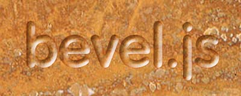

|  |
Bevel.js 1.3 allows you to add bevels (and also shading, shining and glowing) to images on your webpages (alternatively: glossy.js). It uses unobtrusive javascript to keep your code clean. It works in all the major browsers - Mozilla Firefox 1.5+, Opera 9+, Safari and IE6+. On older browsers, it'll degrade and your visitors won't notice a thing. CVI-lab: Get a fast impression of the effects and their illustration qualities. |
Shows some of the things "bevel.js" does.
Download "bevel.js" and include it into your webpage.
<script type="text/javascript" src="bevel.js"></script>
To make it bevel just add a class="bevel" to the image.
If you want flexibility, use "cvi_bevel_lib.js" instead of "bevel.js". You can make your images respond to user actions (e.g. changing one or more options when the image is hovered over).
cvi_bevel.defaultRadius = 20; //INT 20-40 (%)
cvi_bevel.defaultGlow = 33; //INT 1-100 (% opacity)
cvi_bevel.defaultShine = 40; //INT 1-100 (% opacity)
cvi_bevel.defaultShade = 50; //INT 1-100 (% opacity)
cvi_bevel.defaultGlowcolor = '#000000'; //STR '#000000'-'#ffffff'
cvi_bevel.defaultShinecolor = '#ffffff'; //STR '#000000'-'#ffffff'
cvi_bevel.defaultShadecolor = '#000000'; //STR '#000000'-'#ffffff'
cvi_bevel.defaultBackcolor = '#0080ff'; //STR '#000000'-'#ffffff'
cvi_bevel.defaultFillcolor = '#0080ff'; //STR '#000000'-'#ffffff'
cvi_bevel.defaultLinear = false; //BOOLEAN
cvi_bevel.defaultUsemask = false; //BOOLEAN
cvi_bevel.defaultNoglow = false; //BOOLEAN
cvi_bevel.defaultNoshine = false; //BOOLEAN
cvi_bevel.defaultNoshade = false; //BOOLEAN
If cvi_filter_lib.js is loaded also...
cvi_bevel.defaultFilter = null; //OBJ [{f='grayscale'},{f='emboss', s:1}...]
cvi_bevel.add(image, options);
cvi_bevel.add(document.getElementById("myimg"), { radius: 50 });
<img onLoad="cvi_bevel.add(this, { radius: 50 });" ...>
cvi_bevel.modify(image, options);cvi_bevel.modify(document.getElementById("myimg"), { radius: 50 });
cvi_bevel.remove(image);
If you are using the more flexible "cvi_bevel_lib.js" instead of "bevel.js", you'll get access to additional features by the following support libraries (part of distribution):
filter : [{#1 filter options},{#2 filter options}...];
options e.g. {f: 'contrast', s: 1.5, ...}f == STRING filter name e.g. "invert" Default: null (required)
"invert" Reverses all colors of the image
"invertalpha" Reverses the transparency of the image
"grayscale" Converts the image into grayscale
"solarize" Solarizes the image by negating the colors
"sepia" Applies the well-known sepia coloring to the image
"threshold" Converts the image to black&white (s<1 == darker and s>1 == brighter)
"posterize" Posterizes the image by quantizing each channel to a limited number of levels
"tritone" Applies 3 colors for low|mid|high range according to the brightness of the image
"mixrgb" Mixes the RGB channels with the other two channels
"exposure" Simulates changing the exposure of the image
"gamma" Standard gamma correction (s<1 == darker and s>1 == brighter)
"brightness" Change brightness (s<1 == darker and s>1 == brighter)
"contrast" Change contrast (s<1 == lower and s>1 == higher)
"adjustrgba" Adjust the red & green & blue & alpha channel of the image (s == [r,g,b,a])
"adjusthsba" Adjust hue & saturation & brightness & alpha channel of the image (s == [h,s,b,a])
"adjustyuva" Adjust luminance & blue–yellow chrominance & red–cyan chrominance & alpha channel of the image (s == [y,u,v,a])
"colorkey" Set alpha to 0 if pixel color values are higher than min and lower than max rgb color
"chromakey" Set alpha to 0 if pixel hue & saturation & brightness matches
"smooth" Smoothes the image (result is similar to bluring)
"spinblur" Blurs by rotating the centered image
"zoomblur" Blurs by zooming the centered image
"motionblur" Blurs by moving the image to a defined direction
"outline" Creates grayscaled outline images by different operators (e.g. sobel, prewitt...).
"convolve" Use your own 3x3 matrix via option m=[[n,n,n],[n,n,n],[n,n,n]]
"blur" Bluring the image by (in build and extendable cvi_matrix object) convolution
"median" Smoothes grainy images by (in build and extendable cvi_matrix object) convolution
"sharpen" Makes image sharper by (in build and extendable cvi_matrix object) convolution
"sharper" Makes image even sharper by (in build and extendable cvi_matrix object) convolution
"bumplt" Embosses the image by (in build and extendable cvi_matrix object) convolution
"bumpbr" ...
s == FLOAT/OBJECT multiplier(s) e.g. 0-255 Defaults to... (optional)
1 if f=="zoomblur|spinblur" Distance (px)
1 if f=="smooth" Radius (px 1-10)
1 if f=="posterize" Number of levels (1-16)
1 if f=="threshold" Multiplier of 127 (0-2)
1 if f=="brightness|contrast|gamma|exposure" Multiplier of existing value (0-255)
[1,0] if f=="motionblur" Distance (px) and angle (0-360)
[auto,0] if f=="convolve" or m!=null. Divisor of convolution result (-1==auto),
useable for normalization and bias (0-255) for brightness addition
[1,0, if f=="outline" Divisor of convolution result, bias (0-255)
'name'] and operator ('sobel'|'scharr'|'prewitt'|'kirsh'|'roberts')
[1,1,1,1] if f=="adjustrgba" red, green, blue, alpha. Multipliers of existing values (0-255)
[1,1,1,1] if f=="adjusthsba" hue, saturation, brightness, alpha. Multiply existing values (0-255)
[1,1,1,1] if f=="adjustyuva" luminance, blue–yellow chrominance, red–cyan chrominance, alpha. Multiply existing values (0-255)
[0,0,0,0,0] f=="chromakey" hue (0-360) and hue tolerance, min saturation, min brightness, max brightness (0-100)
[[0,0,0], if f=="colorkey" equals rgb min and rgb max triplet (0-255)
[0,0,0]]
[[1,1,1], if f=="mixrgb" Mix into r, g, b with...
[1,1,1]] ...bluegreen, redblue, greenred as triplets [0-255,0-255,0-255]
[[0,0,0], if f=="tritone" low|mid|high range colors as...
[0,0,0], ...rgb triplets [0-255,0-255,0-255]
[0,0,0]]
m == OBJECT kernel matrix e.g. [[n,n,n],[n,n,n],[n,n,n]] Default: null (optional) cvi_istack.defaultImagearray = null; //OBJ e.g. [{source:'image.jpg'}]cvi_istack.defaultMainwidth = 128; //INT 80-n (px width) cvi_istack.defaultMainheight = 128; //INT 80-n (px height)cvi_istack.defaultPlayframes = 20; //INT 1-100 equals frames to fade (* 30 milliseconds)cvi_istack.defaultPlaydelay = 5000; //INT 1000-n equals milliseconds (1/1000)cvi_istack.defaultLoadtimeout= 3000; //INT 1000-n equals milliseconds (1/1000)cvi_istack.defaultNoiefade = false;//BOOLEAN IE's Alpha filter produces rough edgescvi_istack.defaultPlayscript = ''; //STRING e.g. 'cvi_bevel'|'cvi_corner'|'cvi_curl'|'cvi_edge'|'cvi_glossy'|
'cvi_glossy'|'cvi_reflex'|'cvi_slide'|'cvi_sphere'|'cvi_strip'cvi_istack.add(element, options);element == div elementoptions e.g. {mainwidth: 128, mainheight: 128, ...}imagearray == OBJ Default: nullmainwidth == INT 32 - n Default: 128mainheight == INT 32 - n Default: 128playframes == INT 1 - 100 Default: 20playdelay == INT 1000 - n Default: 5000loadtimeout== INT 1000 - n Default: 3000noiefade == BOL true or false Default: falseplayscript == STR Default: ''FLOAT = cvi_istack.version;STRING = cvi_istack.released;
cvi_istack.play(element);
cvi_istack.pause(element);
cvi_istack.remove(element);
<script type="text/javascript">
<!--
var photos = new Array();
photos = [
{source:'images/fire.jpg', options:'{tilt:"l",text:"fire"}' },
{source:'images/jeans.jpg', options:'{tilt:"r",text:"jeans"}' },
{source:'images/rose.jpg', options:'{tilt:"l",text:"rose"}' },
{source:'images/swirl.jpg', options:'{tilt:"r",text:"swirl"}' },
{source:'images/fruits.jpg', options:'{tilt:"l",text:"fruits"}' },
{source:'images/heart.jpg' }
];
function init_ImageStack() {
cvi_glossy.defaultPreserve=true;
cvi_glossy.defaultTilt='left';
cvi_glossy.defaultFontattr= [100,100,100];
cvi_istack.add(document.getElementById('wrapper_div'),{
imagearray: photos,
mainwidth: 200,
mainheight: 200,
playdelay: 3000,
playscript: 'cvi_glossy',
noiefade: true
});
}
if(window.attachEvent) {
window.attachEvent("onload", init_ImageStack);
}else {
window.addEventListener("load", init_ImageStack, false);
}
-->
</script>
In older browsers, the script degrades and your visitors won't notice a thing.
Bevel.js is distributed under this LICENSE. License permits free of charge use on non-commercial and private web sites only under special conditions (as described in the license). This license equals neither "open source" nor "public domain". There are also Commercial Software Licenses available.
Images used are copyrighted and are used for demonstration only.
cvi.netzgesta.de also visit CVI-lab, S5 Reloaded and AJAX-FilmDB